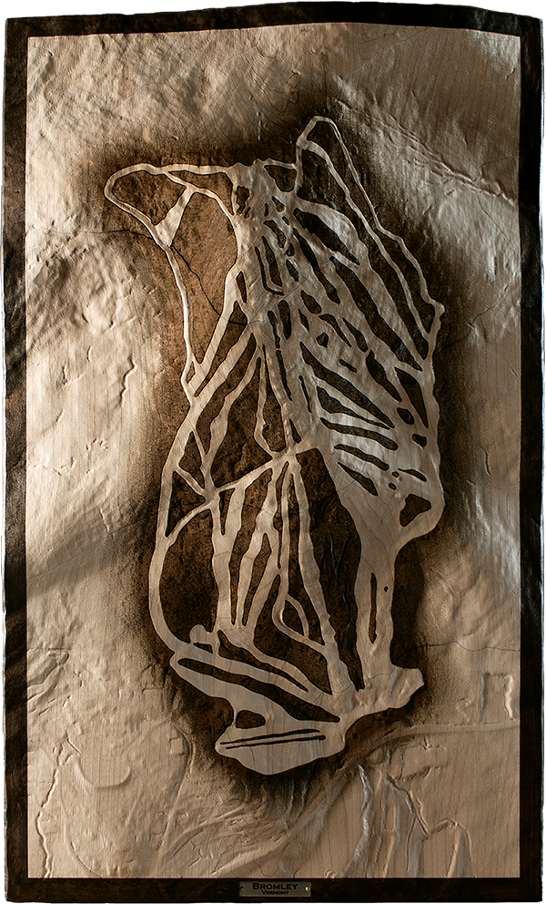
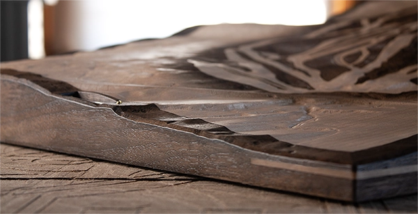

Bromley Mountain
Peru, Vermont
Relief of Bromley Mountain, a south-facing Vermont summit known as much by light as by terrain. Rounded ridgelines and open slopes give the piece its quieter structure. Laser-etched trail lines settle into the southern face, preserving the mountain's easy readability and long familiarity.

Complete topographic composition

Detail of trail network and terrain

Corner spline detail
Growing up, Bromley was the client's horizon line, visible from the house through seasons before it ever became a place to ski. The mountain marked weather coming, snow depth, and the promise of winter. This piece reflects decades of knowing Bromley: first as landmark, then as terrain.
The carving was shaped around Bromley's gentler character: rounded ridgelines, accessible terrain, and a southern face known as much by light as by pitch. The emphasis stays on the mountain's openness, the quality that made it approachable.
Laser-etched treelines define the ski trails across the southern face, positioned to orient without dominating the form. The terrain remains quiet, familiar, and unforced.
— Artist's Note